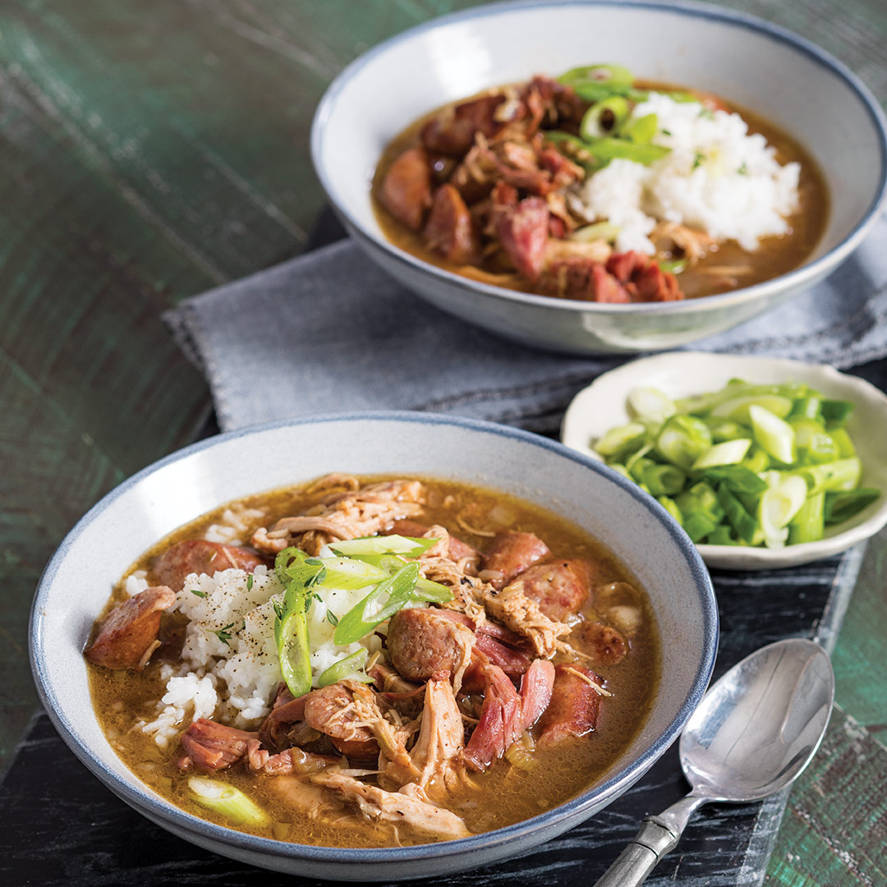

Chicken and Andouille Sausage Gumbo

Description
This is a savory gumbo that provides a little spice from the andouille sausage. Be sure to make plenty, it'll certainly have you going back for seconds.
Ingredients
Makes about 4 Quarts.
- 1 (4- to 4½-pound) whole chicken, cut into 8 pieces
- 1 teaspoon kosher salt
- ½ teaspoon ground black pepper
- 1½ pounds andouille sausage, cut into 1-inch pieces
- ¾ cup vegetable oil
- 1 cup all-purpose flour
- 2 cups chopped yellow onion
- 1 cup chopped green bell pepper
- 1 cup chopped celery
- 2 cloves garlic, minced
- 2 (32-ounce) cartons chicken broth
- 2 smoked ham hocks
- 2 dried bay leaves
- 2 sprigs fresh thyme
- 1 tablespoon Worcestershire sauce
- 1 teaspoon hot sauce
- ½ teaspoon Creole seasoning
- Hot cooked rice, to serve
- Garnish: sliced green onion, fresh thyme
Steps: Making the dish
- Remove bone from chicken breasts, and slice breasts in half crosswise. Sprinkle salt and black pepper over all chicken pieces.
- In a large Dutch oven, cook andouille over medium-high heat, stirring frequently, until browned on all sides, 5 to 7 minutes. Remove using a slotted spoon, and let drain on paper towels, reserving drippings in pot.
- Add chicken to drippings, and cook until browned on all sides, 10 to 12 minutes. Remove using a slotted spoon, and let drain on paper towels, reserving drippings in pot.
- Add oil to drippings, and heat over medium-low. Whisk in flour, and cook, whisking frequently, until mixture is milk chocolate-colored, 12 to 15 minutes.
- Add yellow onion, bell pepper, celery, and garlic to pot, stirring to combine; cook, stirring occasionally and scraping browned bits from bottom of pot with a wooden spoon, for 5 minutes. Gradually stir in broth until well combined. Increase heat to medium. Stir in chicken, andouille, ham hocks, bay leaves, thyme, Worcestershire, hot sauce, and Creole seasoning, and bring to a boil. Reduce heat to a low simmer, and cook, stirring occasionally, for 2 hours.
- Carefully remove chicken pieces and ham hocks from broth, and let cool enough to handle. Shred meat, discarding skin and bones. Return meat to pot, and cook until chicken is tender and gumbo has thickened, about 30 minutes. Add water to keep meat covered, if necessary. Taste and adjust seasonings, if necessary. Serve with rice. Garnish with green onion and thyme, if desired.
Thank you to Louisiana Cookin' for the recipe!